전기공사산업기사 (2019-03-03 기출문제)
1과목: 전기응용
1. 루소선도가 아래 그림과 같을 때, 배광곡선의 식은?
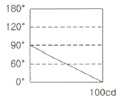
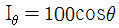
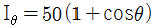
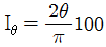
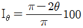
(정답률: 66%)

2. 형광등은 주위 온도가 몇 ℃ 일 때 가장 효율이 높은가?
- 5 ~ 10℃
- 10 ~ 15℃
- 20 ~ 25℃
- 35 ~ 40℃
(정답률: 80%)
3. 전기가열 방식에 대한 설명으로 틀린 것은?
- 저항가열은 줄열을 이용한 가열방식이다.
- 유도가열은 표면 담금질 등의 열처리에 이용되는 방식이다.
- 유전가열은 와전류손과 히스테리시스손에 의한 가열방식이다.
- 아크가열은 전극사이에 발생하는 아크열을 이용한 가열방식이다.
(정답률: 76%)
4. 엘리베이터용 전동기에 대한 설명으로 틀린 것은?
- 관성모멘트가 작아야 한다.
- 기동토크가 큰 것이 요구된다.
- 플라이휠 효과(GD2)가 커야 한다.
- 가속도의 변화율이 적어야 한다.
(정답률: 73%)
5. 열차의 무인운전과 같이 미리 정해진 시간적 변화에 따라 정해진 순서대로 제어하는 방식은?
- 추종제어
- 비율제어
- 정치제어
- 프로그램제어
(정답률: 81%)
6. 전기철도의 전기차량용으로 교류전동기를 사용할 때 장점으로 틀린 것은?
- 제한된 공간에서 소형·경량으로 할 수 있고, 대출력화가 가능하다.
- 브러시 및 정류가 있어서, 구조가 간단하고 제작 및 유지보수가 간단하다.
- 속도제어 범위가 넓기 때문에 고속운전에 적합하다.
- 인버터 제어방식으로 주 회로를 무접점화 할 수 있다.
(정답률: 60%)
7. 축전지의 용량을 표시하는 단위는?
- J
- Wh
- Ah
- VA
(정답률: 81%)
8. 유도가열과 유전가열의 공통된 특성은?
- 도체만을 가열한다.
- 선택가열이 가능하다.
- 절연체만을 가열하다.
- 직류를 사용할 수 없다.
(정답률: 63%)
9. 궤간의 확도(slack)(mm)를 표시하는 식은? (단, ℓ은 차죽거리(m), R(m)는 곡선의 반지름이다.)
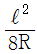
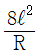
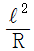
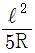
(정답률: 72%)
10. 다음 ( )에 들어갈 도금의 종류로 옳은 것은?
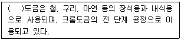
- 동
- 은
- 니켈
- 카드뮴
(정답률: 78%)
11. 고주파 유전가열을 응용한 사항으로 틀린 것은?
- 고무의 가황
- 합판의 건조, 접착
- 플라스틱의 성형과 비닐막 접착
- 강재의 표면 담금질
(정답률: 72%)
12. 토크가 증가할 때 가장 급격히 속도가 낮아지는 전동기는?
- 직류 분권전동기
- 직류 복권전동기
- 직류 직권전동기
- 3상 유동전동기
(정답률: 71%)
13. 그림과 같이 광원 L에서 P점 방향의 광도가 50cd 일 때 P점의 수평면 조도는 약 몇 lx인가?
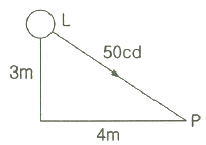
- 0.6
- 0.8
- 1.2
- 1.6
(정답률: 67%)
14. 양방향 전압지지 소자가 아닌 것은?
- MOSFET
- SCR 사이리스터
- GTO 사이리스터
- IGBT
(정답률: 50%)
15. 두 도체로 이루어진 폐회로에서 두 접점에 온도차를 주었을 때 전류가 흐르는 현상은?
- 홀 효과
- 광전 효과
- 제벡 효과
- 펠티에 효과
(정답률: 67%)
16. 단면적 0.5m2, 길이 10m인 원형 봉상도체의 한쪽을 400℃로 하고 이로부터 100℃의 다른 단자의 매시간 40kcal의 열이 전도되었다면 이 도체의 열전도율은 약 몇 kcal/m·h·℃ 인가?
- 267
- 26.7
- 2.67
- 0.267
(정답률: 49%)
17. 전구에 게터(getter)를 사용하는 목적은?
- 광속을 많게 한다.
- 전력을 적게 한다.
- 진공도를 10-2 mmHg로 낮춘다.
- 수명을 길게 한다.
(정답률: 81%)
18. 제어기의 요소 중 기계적 요소에 포함되지 않는 것은?
- 스프링
- 벨로즈
- 래더 다이어그램부
- 노즐 플래퍼
(정답률: 75%)
19. 두 개의 사이리스터를 역병렬로 접속한 것과 같은 특성을 나타내는 소자는?
- TRIAC
- GTO
- SCS
- SSS
(정답률: 59%)
20. 가시광선 파장(nm)의 범위는?
- 280 ~ 310
- 380 ~ 760
- 400 ~ 430
- 555 ~ 580
(정답률: 66%)
2과목: 전력공학
21. 송전선로의 중성점을 접지하는 목적으로 가장 옳은 것은?
- 전압강하의 감소
- 유도장해의 감소
- 전선 동량의 절약
- 이상전압의 발생 방지
(정답률: 58%)
22. 중성점 저항접지방식에서 1선 지락 시의 영상전류를 Io라고 할 때, 접지저항으로 흐르는 전류는?
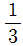
Io- √3 Io
- 3 Io
- 6 Io
(정답률: 41%)
23. 다음 ( )에 알맞은 내용으로 옳은 것은? (단, 공급 전력과 선로 손실률은 동일하다.)
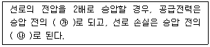
- ㉮ 1/4, ㉯ 2배
- ㉮ 1/4, ㉯ 4배
- ㉮ 2배, ㉯ 1/4
- ㉮ 4배, ㉯ 1/4
(정답률: 53%)
24. 다음 보호계전기 회로에서 박스 (A) 부분의 명칭은?
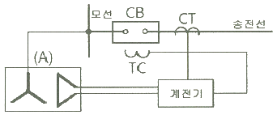
- 차단코일
- 영상변류기
- 계기용변류기
- 계기용변압기
(정답률: 38%)
25. 단거리 송전선로에서 정상상태 유효전력의 크기는?
- 선로리액턴스 및 전압위상차에 비례한다.
- 선로리액턴스 및 전압위상차에 반비례한다.
- 선로리액턴스에 반비례하고 상차각에 비례한다.
- 선로리액턴스에 비례하고 상차각에 반비례한다.
(정답률: 49%)
26. 송전선의 특성임피던스를 Z0, 전파속도를 V라 할 때, 이 송전선의 단위길이에 대한 인덕턴스 L은?
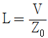
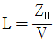
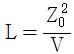
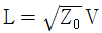
(정답률: 39%)
27. 전력 원선도의 실수축과 허수축은 각각 어느 것을 나타내는가?
- 실수축은 전압이고, 허수축은 전류이다.
- 실수축은 전압이고, 허수축은 역률이다.
- 실수축은 전류이고, 허수축은 유효전력이다.
- 실수축은 유효전력이고, 허수축은 무효전력이다.
(정답률: 61%)
28. 직렬 콘덴서를 선로에 삽입할 때의 현상으로 옳은 것은?
- 부하의 역률을 개선한다.
- 선로의 리액턴스가 증가된다.
- 선로의 전압강하를 줄일 수 없다.
- 계통의 정태안정도를 증가시킨다.
(정답률: 42%)
29. 전선로의 지지물 양쪽의 경간의 차가 큰 장소에 사용되며, 일명 E명 철탑이라고도 하는 표준 철탑의 일종은?
- 직선형 철탑
- 내장형 철탑
- 각도형 철탑
- 인류형 철탑
(정답률: 59%)
30. 차단기의 전류를 차단할 때, 재점호가 일어나기 쉬운 차단 전류는?
- 동상전류
- 지상전류
- 진상전류
- 단락전류
(정답률: 48%)
31. 전력계통의 전력용 콘덴서와 직렬로 연결하는 리액터로 제거되는 고조파는?
- 제2고조파
- 제3고조파
- 제4고조파
- 제5고조파
(정답률: 55%)
32. 일반회로정수가 A, B, C, D이고 송전단 상전압이 Es인 경우, 무부하 시의 충전전류(송전단 전류)는?
- C Es
- A C Es
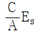
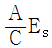
(정답률: 50%)
33. 배전선에 부하가 균등하게 분포되었을 때 배전선 말단에서의 전압강하는 전 부하가 집중적으로 배전선 말단에 연결되어 있을 때의 몇 % 인가?
- 25
- 50
- 75
- 100
(정답률: 43%)
34. 설비용량 600 kW, 부등률 1.2, 수용률 60% 일때의 합성 최대전력은 몇 kW 인가?
- 240
- 300
- 432
- 833
(정답률: 46%)
35. 배전선로에서 사용하는 전압 조정방법이 아닌 것은?
- 승압기 사용
- 병렬콘덴서 사용
- 저전압계전기 사용
- 주상변압기 탭 전환
(정답률: 33%)
36. 수차발전기가 난조를 일으키는 원인은?
- 수차의 조속기가 예민하다.
- 수차의 속도 변동률이 적다.
- 발전기의 관성 모멘트가 크다.
- 발전기의 자극에 제동권선이 있다.
(정답률: 53%)
37. 그림과 같은 3상 송전계통의 송전전압은 22kV 이다. 한 점 P에서 3상 단락했을 때 발전기에 흐르는 단락전류는 약 몇 A 인가?
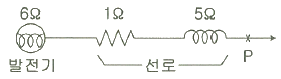
- 725
- 1150
- 1990
- 3725
(정답률: 40%)
38. 변전소에서 수용가로 공급되는 전력을 차단하고 소내 기기를 점검할 경우, 차단기와 단로기의 개폐 조작 방법으로 옳은 것은?
- 점검 시에는 차단기로 부하회로를 끊고 난 다음에 단로기를 열어야 하며, 점검 후에는 단로기를 넣은 후 차단기를 넣어야 한다.
- 점검 시에는 단로기를 열고 난 후 차단기를 열어야 하며, 점검 후에는 단로기를 넣고 난 다음에 차단기로 부하회로를 연결하여야 한다.
- 점검 시에는 차단기로 부하회로를 끊고 단로기를 열어야 하며, 점검 후에는 차단기로 부하회로를 연결한 후 단로기를 넣어야 한다.
- 점검 시에는 단로기를 열고 난 후 차단기를 열어야 하며, 점검이 끝난 경우에는 차단기를 부하에 연결한 다음에 단로기를 넣어야 한다.
(정답률: 44%)
39. 주상변압기의 고장이 배전선로에 파급되는 것을 방지하고 변압기의 과부하 소손을 예방하기 위하여 사용되는 개폐기는?
- 리클로저
- 부하개폐기
- 컷아웃스위치
- 섹셔널라이저
(정답률: 42%)
40. 다음 중 뇌해방지와 관계가 없는 것은?
- 댐퍼
- 소호환
- 가공지선
- 탑각접지
(정답률: 61%)
3과목: 전기기기
41. 전동력 응용기기에서 GD2의 값이 적은 것이 바람직한 기기는?
- 압연기
- 송풍기
- 냉동기
- 엘리베이터
(정답률: 52%)
42. 유도전동기 슬립 s의 범위는?
- 1 ＜ s
- s ＜ -1
- -1 ＜ s ＜ 0
- 0 ＜ s ＜ 1
(정답률: 58%)
43. 전기차 총 도체수 500, 6극, 중권의 직류전동기가 있다. 전기자 전 전류가 100A일 때의 발생토크는 약 몇 kg·m 인가? (단, 1극당 자속수는 0.01 Wb 이다.)
- 8.12
- 9.54
- 10.25
- 11.58
(정답률: 35%)
44. 직류 및 교류 양용에 사용되는 만능 전동기는?
- 복권전동기
- 유도전동기
- 동기전동기
- 직권 정류자전동기
(정답률: 44%)
45. 온도 측정장치 중 변압기의 권선온도 측정에 가장 적당한 것은?
- 탐지코일
- dial온도계
- 권선온도계
- 봉상온도계
(정답률: 53%)
46. 직류전동기의 속도제어법 중 정지 워드 레오나드 방식에 관한 설명으로 틀린 것은?
- 광범위한 속도제어가 가능하다.
- 정토크 가변속도의 용도에 적합하다.
- 제철용 압연기, 엘리베이터 등에 사용된다.
- 직권전동기의 저항제어와 조합하여 사용한다.
(정답률: 42%)
47. 정격 150kVA, 철손 1kW, 전부하 동손이 4kW인 단상변압기의 최대 효율(%)과 최대 효율 시의 부하(kVA)는? (단, 부하 역률은 1 이다.)
- 96.8%, 125 kVA
- 97%, 50 kVA
- 97.2%, 100 kVA
- 97.4%, 75 kVA
(정답률: 38%)
48. 200kW, 200V의 직류 분권발전기가 있다. 전기자 권선의 저항이 0.025Ω 일 때 전압변동률은 몇 % 인가?
- 6.0
- 12.5
- 20.5
- 25.0
(정답률: 42%)
49. 3상 유도전동기의 토크와 출력에 대한 설명으로 옳은 것은?
- 속도에 관계가 없다.
- 동일 속도에서 발생한다.
- 최대 출력은 최대 토크보다 고속도에서 발생한다.
- 최대 토크가 최대 출력보다 고속도에서 발생한다.
(정답률: 38%)
50. 동기전동기에서 90° 앞선 전류가 흐를 때 전기자 반작용은?
- 감자작용
- 증자작용
- 편자작용
- 교차자화작용
(정답률: 49%)
51. 권수비 30인 단상변압기의 1차에 6600V를 공급학, 2차에 40kW, 뒤진 역률 80%의 부하를 걸 때 2차 전류 I2 및 1차 전류 I1은 약 몇 A 인가? (단, 변압기의 손실은 무시한다.)
- I2 = 145.5, I1 = 4.85
- I2 = 181.8, I1 = 6.06
- I2 = 227.3, I1 = 7.58
- I2 = 321.3, I1 = 10.28
(정답률: 38%)
52. 어떤 IGBT의 열용량은 0.02 /℃, 열저항은 0.625 ℃/W 이다. 이 소자에 직류 25A가 흐를 때 전압강하는 3V 이다. 몇 ℃의 온도상승이 발생하는가?
- 1.5
- 1.7
- 47
- 52
(정답률: 35%)
53. 일정 전압으로 운전하는 직류전동기의 손실이 x+yI2으로 될 때 어떤 전류에서 효율이 최대가 되는가? (단, x ,y는 정수이다.)
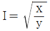
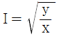
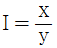
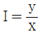
(정답률: 50%)
54. T-결선에 의하여 3300V의 3상으로부터 200V, 40kVA의 전력을 얻는 경우 T좌 변압기의 권수비는 약 얼마인가?
- 10.2
- 11.7
- 14.3
- 16.5
(정답률: 32%)
55. 3상 동기발전기 각 상의 유기기전력 중 제3고조파를 제거하려면 코일간격/극간격을 어떻게 하면 되는가?
- 0.11
- 0.33
- 0.67
- 1.34
(정답률: 36%)
56. 어떤 변압기의 백분율 저항강하가 2%, 백분율 리액턴스강하가 3%라 한다. 이 변압기로 역률이 80%인 부하에 전력을 공급하고 있다. 이 변압기의 전압변동률은 몇 % 인가?
- 2.4
- 3.4
- 3.8
- 4.0
(정답률: 36%)
57. 사이리스터에 의한 제어는 무엇을 제어하여 출력전압을 변환시키는가?
- 토크
- 위상각
- 회전수
- 주파수
(정답률: 48%)
58. 동기발전기에서 전기자 전류를 I, 역률을 cosθ라 하면 횡축 반작용을 하는 성분은?
- I cosθ
- I cotθ
- I sinθ
- I tanθ
(정답률: 45%)
59. 단자전압 220V, 부하전류 48A, 계자전류 2A, 전기자 저항 0.2Ω인 직류분권발전기의 유도기전력(V)은? (단, 전기자 반작용은 무시한다.)
- 210
- 22
- 230
- 240
(정답률: 50%)
60. 단상 유도전동기와 3상 유도전동기를 비교했을 때 단상 유도전동기의 특징에 해당되는 것은?
- 대용량이다.
- 중량이 작다.
- 역률, 효율이 좋다.
- 기동장치가 필요하다.
(정답률: 44%)
4과목: 회로이론
61. 그림에서 4단자 회로 정수 A, B, C, D 중 출력 단자 3, 4가 개방되었을 때의
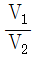
인 A의 값은?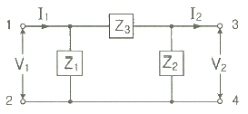
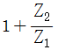
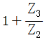
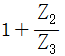
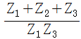
(정답률: 42%)
62.
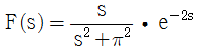
함수를 시간추이정리에 의해서 역변환하면?- sinπ(t+a) • u(t+a)
- sinπ(t-2) • u(t-2)
- cosπ(t+a) • u(t+a)
- cosπ(t-2) • u(t-2)
(정답률: 38%)
63. 저항 R1(Ω), R2(Ω) 및 인덕턴스 L(H)이 직렬로 연결되어 있는 회로의 시정수(s)는?
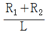
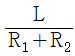
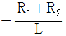
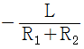
(정답률: 48%)
64. 3상 회로에 △결선된 평형 순저항 부하를 사용하는 경우 선간전압 220V, 상전류가 7.33A라면 1상의 부하저항은 약 몇 Ω 인가?
- 80
- 60
- 45
- 30
(정답률: 47%)
65. e = 200√2 sinωt + 150√2 sin 3ωt + 100√2 sin 5ωt (V)인 전압을 R-L 직렬회로에 가할 때에 제3고조파 전로의 실효값은 몇 A 인가? (단, R = 8Ω, ωL = 2Ω 이다.)
- 5
- 8
- 10
- 15
(정답률: 39%)
66. 어느 소자에 전압 e = 125sin377t(V)를 가했을 때 전류 i = 50cos377t(A)가 흘렀다. 이 회로의 소자는 어떤 종류인가?
- 순저항
- 용량 리액턴스
- 유도 리액턴스
- 저항과 유도 리액턴스
(정답률: 34%)
67. L형 4단자 회로망에서 4단자 정수가 B = 5/3, C = 1 이고, 영상임피던스
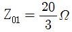
일 때 영상임피던스 Z02(Ω)의 값은?- 4
- 1/4
- 100/9
- 9/100
(정답률: 29%)
68. 비정현파의 성분을 가장 옳게 나타낸 것은?
- 직류분 + 고조파
- 교류분 + 고조파
- 교류분 + 기본파 + 고조파
- 직류분 + 기본파 + 고조파
(정답률: 53%)
69.
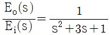
의 전달함수를 미분방정식으로 표시하면? (단,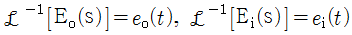
이다.)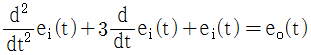
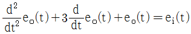
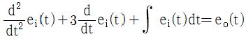
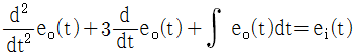
(정답률: 35%)
70. t=0에서 스위치 S를 닫았을 때 정상 전류값(A)은?
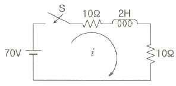
- 1
- 2.5
- 3.5
- 7
(정답률: 46%)
71. 두 대의 전력계를 사용하여 3상 평형 부하의 역률를 측정하려고 한다. 전력계의 지시가 각각 P1(W), P2(W)할 때 이 회로의 역률은?
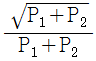
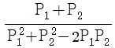
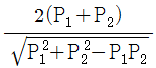
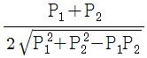
(정답률: 42%)
72. 기전력 3V, 내부저항 0.5Ω의 전지 9개가 있다. 이것을 3개씩 직렬로 하여 3조 병렬 접속한 것에 부하저항 1.5Ω을 접속하면 부하전류(A)는?
- 2.5
- 3.5
- 4.5
- 5.5
(정답률: 42%)
73. 다음과 같은 전류의 초기값 i(0+)를 구하면?
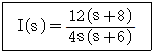
- 1
- 2
- 3
- 4
(정답률: 43%)
74. 다음과 같은 회로에서 a, b 양단의 전압은 몇 V 인가?
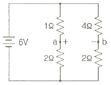
- 1
- 2
- 2.5
- 3.5
(정답률: 37%)
75. 대칭 3상 Y결선에서 선간전압이 200√3 V 이고 각 상의 임피던스가 30 + j40(Ω)의 평형 부하일 때 선전류(A)는?
- 2
- 2√3
- 4
- 4√3
(정답률: 42%)
76. 대칭 n상 환상결선에서 선전류와 환상전류 사이의 위상차는 어떻게 되는가?
(정답률: 37%)
77. R = 1kΩ, C = 1μF 가 직렬접속된 회로에 스텝(구형파) 전압 10V를 인가하는 순간에 커패시터 C에 걸리는 최대전압(V)은?
- 0
- 3.72
- 6.32
- 10
(정답률: 34%)
78. Va, Vb, Vc를 3상 불평형 전압이라 하면 정상(定相)전압(V)은? (단, 이다.)
(정답률: 40%)
79. 저항 R = 6Ω과 유도리액턴스 XL = 8Ω이 직렬로 접속된 회로에서 v = 200√2 sinωt(V)인 전압을 인가하였다. 이 회로의 소비되는 전력(kW)은?
- 1.2
- 2.2
- 2.4
- 3.2
(정답률: 39%)
80. 정격전압에서 1kW의 전력을 소비하는 저항에 정격의 80%의 전압을 가할 때의 전력(W)은?
- 340
- 540
- 640
- 740
(정답률: 46%)
5과목: 전기설비
81. 중선선 다중접지식의 것으로 전로에 지락이 생겼을 때에 2초 이내에 자동적으로 이를 전로로부터 차단하는 장치가 되어 있는 22.9 kV 가공전선로를 상부 조영재의 위쪽에서 접근상태로 시설하는 경우, 가공전선과 건조물과의 이격거리는 몇 m 이상이어야 하는가? (단, 전선으로는 나전선을 사용한다고 한다.)
- 1.2
- 1.5
- 2.5
- 3.0
(정답률: 22%)
82. 전기부식방지 시설을 시설할 때 전기부식방지용 전원 장치로부터 양극 및 피방식체까지의 전로의 사용전압은 직류 몇 V 이하이어야 하는가?
- 20
- 40
- 60
- 80
(정답률: 46%)
83. 시가지에 시설하는 고압 가공전선으로 경동선을 사용하려면 그 지름은 최소 몇 mm 이어야 하는가?
- 2.6
- 3.2
- 4.0
- 5.0
(정답률: 20%)
84. 과전류차단기로 시설하는 퓨즈 중 고압전로에 사용하는 비포장 퓨즈는 정격전류의 몇 배의 전류에 견디어야 하는가?
- 1.1
- 1.25
- 1.5
- 2
(정답률: 41%)
85. 고압 가공전선 상호 간의 접근 또는 교차하여 시설되는 경우, 고압 가공전선 상호 간의 이격거리는 몇 cm 이상이어야 하는가? (단, 고압 가공전선은 모두 케이블이 아니라고 한다.)
- 50
- 60
- 70
- 80
(정답률: 32%)
86. 가공 직류 전차선의 레일면상의 높이는 몇 m 이상이어야 하는가?
- 6.0
- 5.5
- 5.0
- 4.8
(정답률: 27%)
87. 건조한 장소로서 전개된 장소에 한하여 시설할 수 잇는 고압 옥내배선의 방법은?
- 금속관 공사
- 애자사용 공사
- 가요전선관 공사
- 합성수지관 공사
(정답률: 42%)
88. 변압기의 안정권선이나 유휴권선 또는 전압조정기의 내장권선을 이상전압으로부터 보호하기 위하여 특히 필요할 경우에 그 권선에 접지공사를 할 때에는 몇 종 접지공사를 하여야 하는가?
- 제1종 접지공사
- 제2종 접지공사
- 제3종 접지공사
- 특별 제3종 접지공사
(정답률: 24%)
89. 가공전선로의 지지물에 지선을 시설하는 기준으로 옳은 것은?
- 소선 지름 : 1.6mm, 안전율 : 2.0, 허용인장하중 : 4.31 kN
- 소선 지름 : 2.0mm, 안전율 : 2.5, 허용인장하중 : 2.11 kN
- 소선 지름 : 2.6mm, 안전율 : 1.5, 허용인장하중 : 3.21 kN
- 소선 지름 : 2.6mm, 안전율 : 2.5, 허용인장하중 : 4.31 kN
(정답률: 52%)
90. 제1종 접지공사의 접지저항 값은 몇 Ω 이하로 유지하여야 하는가?(오류 신고가 접수된 문제입니다. 반드시 정답과 해설을 확인하시기 바랍니다.)
- 10
- 30
- 50
- 100
(정답률: 48%)
91. 6.6 kV 지중전선로의 케이블을 직류전원으로 절연 내력시험을 하자면 시험전압은 직류 몇 V 인가?
- 9900
- 14420
- 16500
- 19800
(정답률: 29%)
92. 전력 보안 통신용 전화설비를 시설하여야 하는 곳은?
- 2 이상의 발전소 상호 간
- 원격 감시 제어가 되는 변전소
- 원격 감시 제어가 되는 급전소
- 원격 감시 제어가 되지 않는 발전소
(정답률: 52%)
93. 출퇴표시등 회로에 전기를 공급하기 위한 변압기는 2차측 전로의 사용전압이 몇 V 이하인 절연 변압기이어야 하는가?
- 40
- 60
- 150
- 300
(정답률: 33%)
94. 고압 가공전선이 가공약전류전선 등과 접근하는 경우에 고압 가공전선과 가공약전류전선 사이의 이격거리는 몇 cm 이상이어야 하는가? (단, 전선이 케이블인 경우)
- 20
- 30
- 40
- 50
(정답률: 28%)
95. 154/22.9 kV용 변전소의 변압기에 반드시 시설하지 않아도 되는 계측장치는?
- 전압계
- 전류계
- 역률계
- 온도계
(정답률: 50%)
96. 시가지 등에서 특고압 가공전선로를 시설하는 경우 특고압 가공전선로용 지지물로 사용할 수 없는 것은? (단, 사용전압이 170 kV 이하인 경우이다.)
- 철탑
- 목주
- 철주
- 철근 콘크리트주
(정답률: 45%)
97. 22.9 kV 특고압 가공전선로의 중성선은 다중 접지를 하여야 한다. 각 접지선을 중성선으로부터 분리하였을 경우 1km 마다 중성선과 대지 사이의 합성전기저항 값은 몇 Ω 이하인가? (단, 전로에 지락이 생겼을 때에 2초 이내에 자동적으로 이를 전로로부터 차단하는 장치가 되어 있다.)
- 5
- 10
- 15
- 20
(정답률: 25%)
98. 케이블을 지지하기 위하여 사용하는 금속제 케이블 트레이의 종류가 아닌 것은?
- 사다리형
- 통풍 밀폐형
- 통풍 채널형
- 바닥 밀폐형
(정답률: 46%)
99. 전기부식방식 시설은 지표 또는 수중에서 1m 간격의 임의의 2점(양극의 주의 1m 이내의 거리에 있는 점 및 울타리의 내부점을 제외한다.)간의 전위차가 몇 V를 넘으면 안 되는가?
- 5
- 10
- 25
- 30
(정답률: 28%)
100. 발전소·변전소 또는 이에 준하는 곳의 특고압 전로에는 그의 보기 쉬운 곳에 어떤 표시를 반드시 하여야 하는가?
- 모선(母線) 표시
- 상별(相別) 표시
- 차단(遮斷) 위험표시
- 수전(受電) 위험표시
(정답률: 42%)